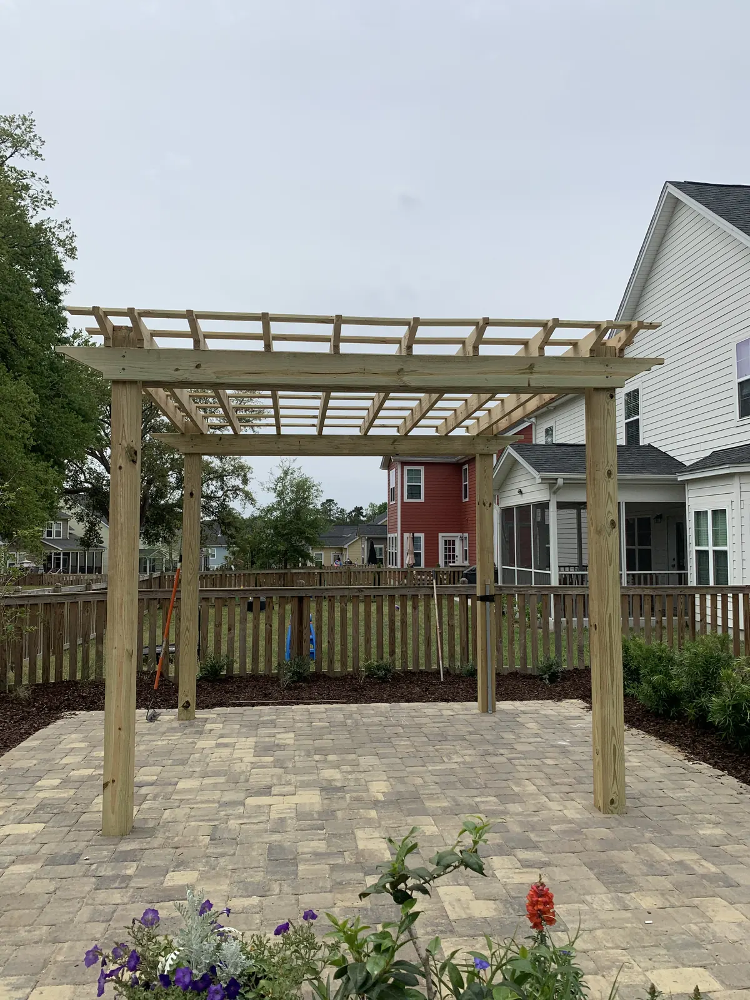
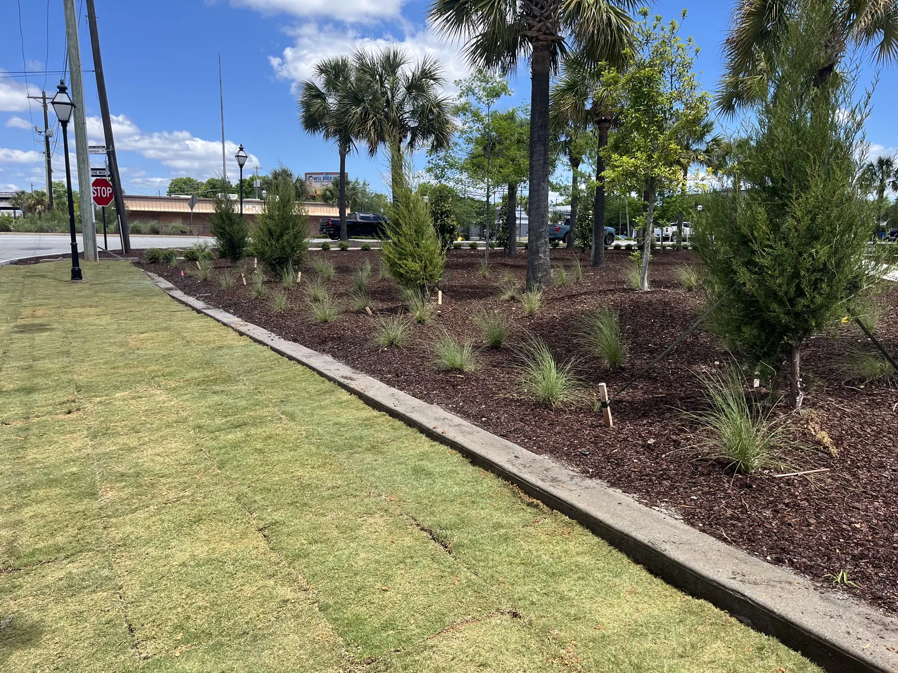

How We Build a Beautiful Backyard Within Your Budget
A lot of the work on our website is big: pavilions, outdoor kitchens, pools with a whole yard around them. We are proud of that work and we will keep doing it. But people have told us that after looking at our website, they did not think they could afford us. So it is worth saying plainly: we also do smaller, simpler jobs, and we enjoy getting people a usable, beautiful backyard within their budget. Here is how that works.
We Start With a Rough Budget
Most people want a rough budget first, because they do not know what these things cost. It usually comes within a week of the consultation. There is no point designing something you cannot afford.
A Drawn Design, Without the Fee on Smaller Jobs
Smaller jobs often still get a drawn design if one is needed. If it is not extensive, we do not charge for it. A larger project with a full drawn design carries a design fee, and what it comes to depends on the job.

Designing a Usable Backyard on a Budget
A backyard does not have to be expensive to be useful and good-looking. These are the choices that keep the cost down:
- Smaller plants. A 30-gallon tree and a 3-gallon shrub are not the same job. Buying smaller and waiting two seasons is a legitimate way to hit a budget.
- Poured concrete and some concrete pavers. Both are affordable options for a patio or a walkway.
- A pea gravel patio with rock glue. An affordable option that still gives you a useful patio.
- Pressure-treated lumber for structures. For something like an outdoor shower, pressure-treated lumber is the affordable choice.
- A basic pergola. Minimal trim and pressure-treated lumber keep a pergola affordable.

What Some Smaller Jobs Cost
- A few new plant beds typically run $1,000 to $2,000.
- Sod is $750 a pallet, installed. Removing the old grass and regrading are not included in that price. We aim to fit simple sod jobs in within a few weeks.
What Outdoor Living Costs in Charleston has more prices from our own projects.
Do It in Stages
Most yards are done in stages, and that is sensible. Rushing is the one thing we push back on: we would sooner spread a project over a couple of years than build something you will not love. The first stage is planned with the last in mind, so the lines for later work go in before anything is finished over them. Our Fireside Retreat in Summerville was built that way, with the gas and water lines for later stages run ahead of time.
Small Things Now That Save Money Later
An empty conduit costs little on the day; adding one under a finished patio means cutting it up. And if a structure or a patio is going in anyway, that is the time to run the lighting, because retrofitting the wiring afterwards is far harder.
See the Smaller Jobs
Our portfolio now opens with smaller projects: turf, sod, walkways and planting, patios, gates and an outdoor shower, alongside the bigger builds.
Talk to Us About Your Yard
Tell us what you have in mind and roughly what you want to spend. The consultation at your home is free around Charleston, Mount Pleasant and Summerville. For Kiawah, Seabrook, Wadmalaw and Awendaw, or anywhere else more than an hour from Charleston or Summerville, there is a charge for the proposal trip. It comes off the price if you go ahead with the build, and it is not refundable if you do not. Get in touch, or call or text Doug at (843) 614-9773.
Planning a Project of Your Own?
See everything we design and build, or get in touch to talk through your ideas with Doug and Zach.